Overview
TwitchVR was a design studio project exploring how livestream spectatorship might feel if it were designed natively for home VR rather than adapted from a flat interface. Instead of treating Twitch as just another screen in a headset, we imagined it as a shared spatial experience - part theater, part social viewing room, and part personal immersion.
The project was completed in a three-week Georgia Tech design sprint focused on reimagining social media in virtual reality. While some teams pursued lighter “mobile VR” concepts, we chose to push toward a fully immersive direction and built a functioning Unity demo to make the idea tangible.
My Role
I was the team member responsible for much of the prototype implementation. That included 3D modeling in Blender, environment creation and scripting in Unity, and helping shape the VR-specific interaction patterns across the experience. I also scripted, voiced, and edited much of the final demo video.
Concept and Interaction Model
Twitch is built around live viewing and real-time social presence, which made it a compelling test case for VR. The design question was not simply how to place Twitch into a headset, but how to reinterpret livestream viewing as something more spatial, communal, and immersive.
Our concept centered on a theater-like social environment for watching streams with others, combined with the ability to shift into a more private, focused mode when desired. One of the key interaction ideas was a transition from shared viewing to private viewing by summoning a VR headset within the experience itself - effectively using an in-world interaction to “zoom in” to a more immersive personal mode.
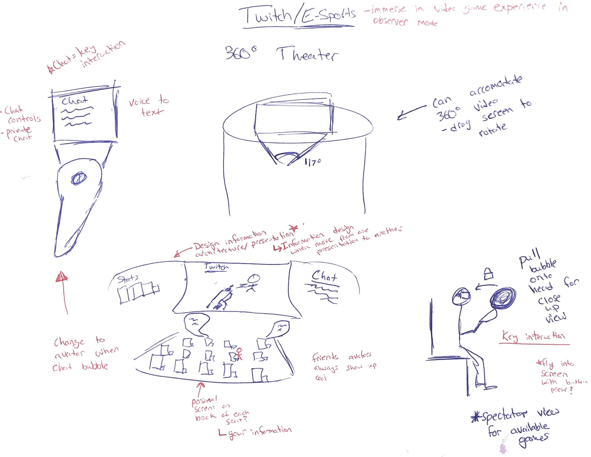
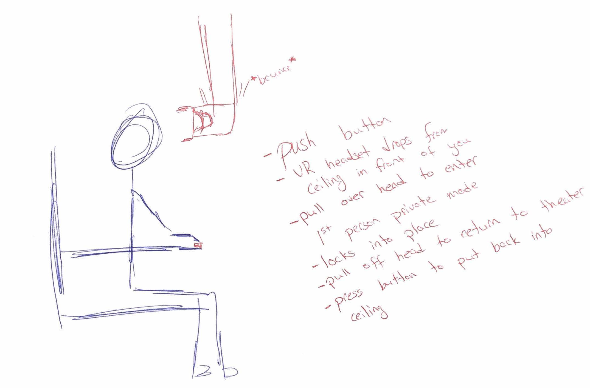
Early sketches exploring how Twitch viewing, chat, and environmental immersion might come together in a VR-native experience
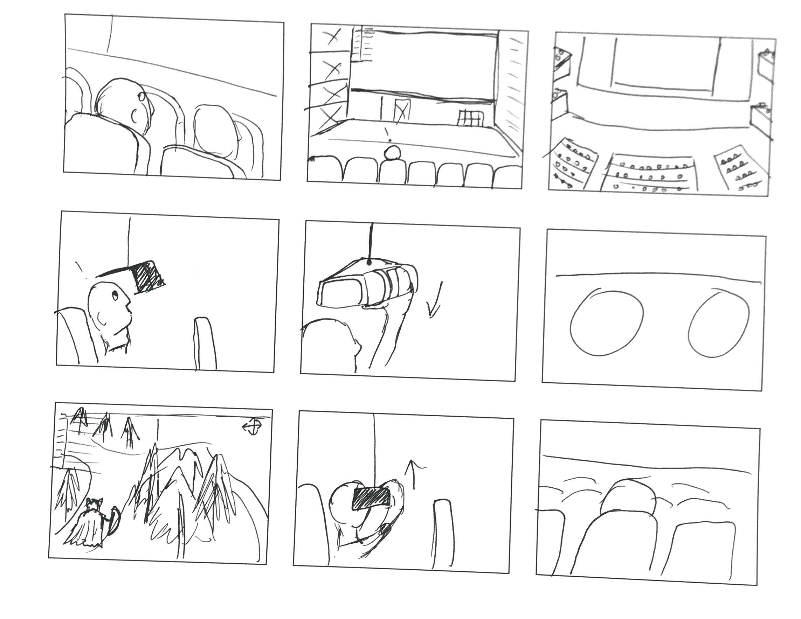
Storyboard of the transition from shared theater viewing to private immersive mode, one of the project’s defining interaction concepts
Prototype and Build
Once the concept was defined, we moved quickly into prototyping across multiple levels of fidelity. We used physical modeling to think through scale, spatial layout, and how the environment might feel as a place rather than just an interface. That helped us clarify the structure of the viewing space before building it digitally.
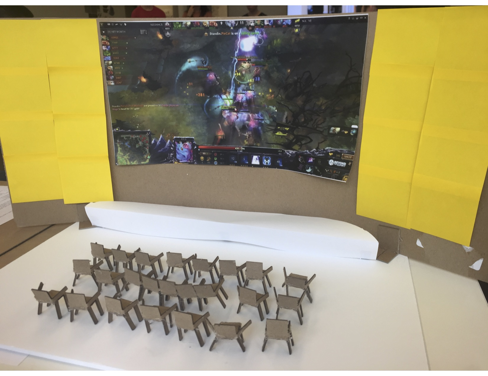
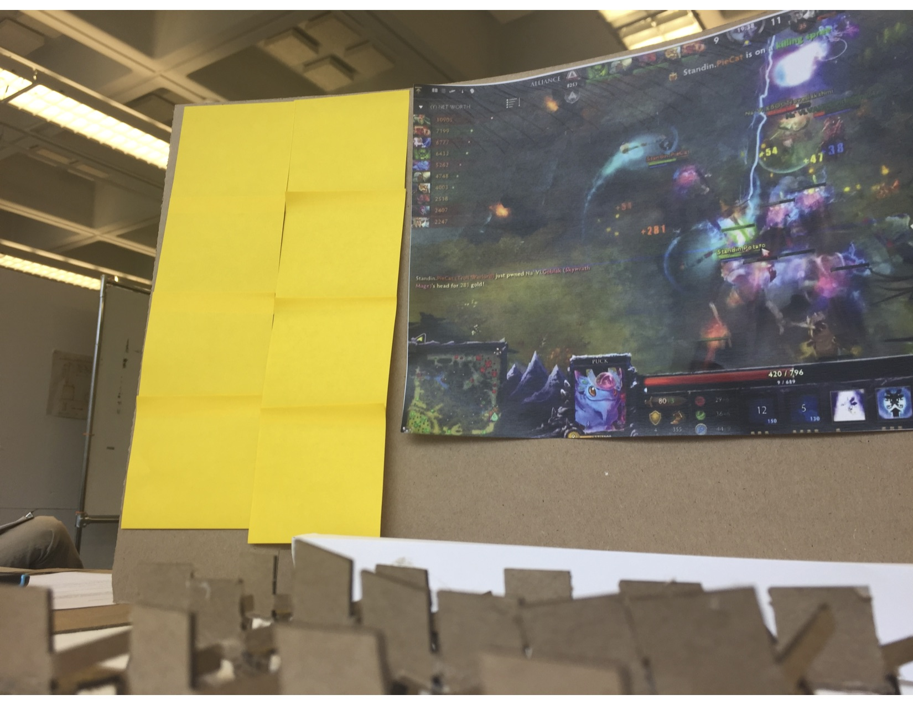
Physical prototyping helped us reason about scale, seating, visibility, and spatial composition before moving into Unity
From there, we created a functioning VR demo in Unity. I used Blender and Unity to build the environment and implement the core interactions, while my teammates developed interface assets and supporting design materials that I could integrate into the virtual space. This made the project more than a speculative concept - it became something users could actually step into with a headset.
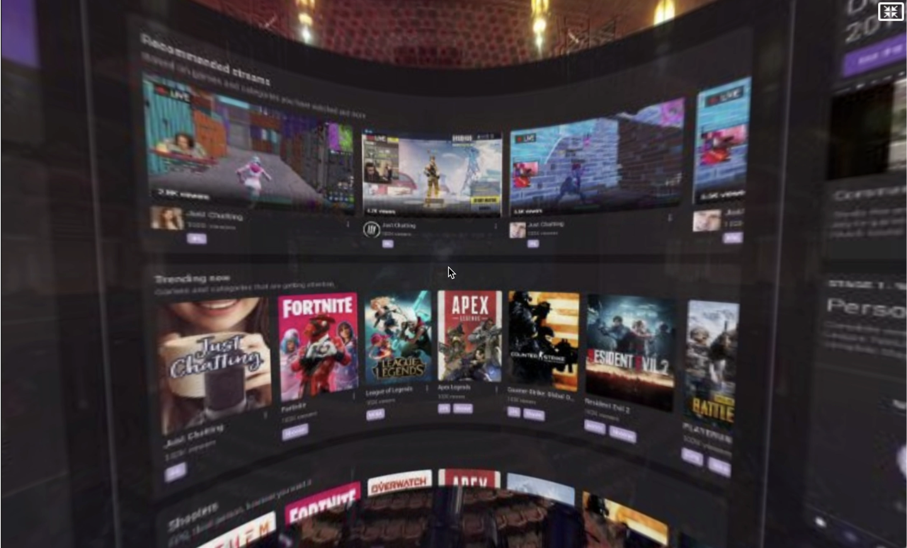
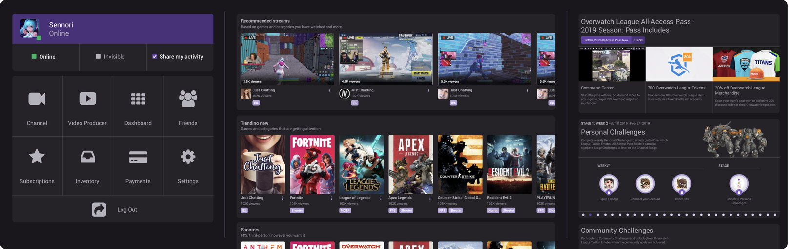
Explorations of how channel browsing UI might adapt from flat screens into a curved, spatially appropriate VR surface
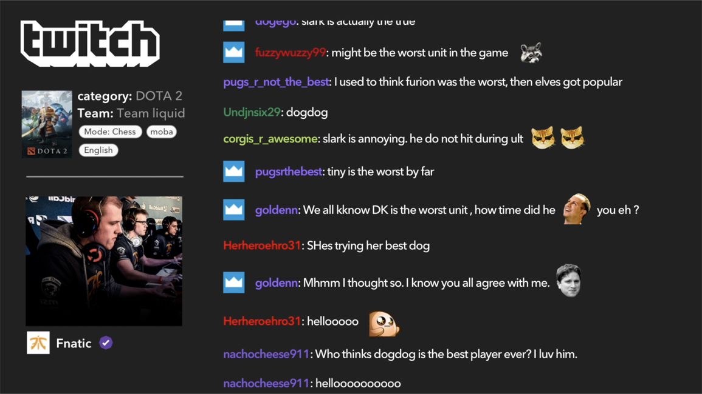
A seatback chat interface designed to keep livestream interaction present without overwhelming the main viewing experience
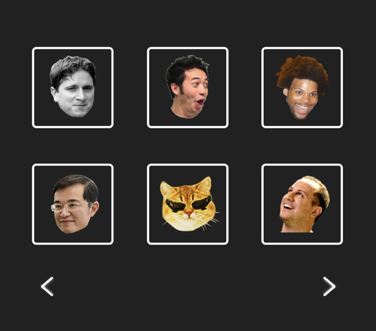
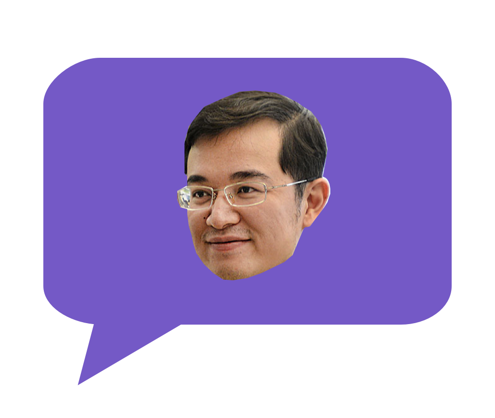
Emote and reaction concepts intended to make crowd presence and lightweight social expression visible inside the shared space
The prototype also explored how the experience could live in different virtual venues rather than a single fixed theater, reinforcing the idea that livestream viewing in VR could be environmental as well as interface-driven.
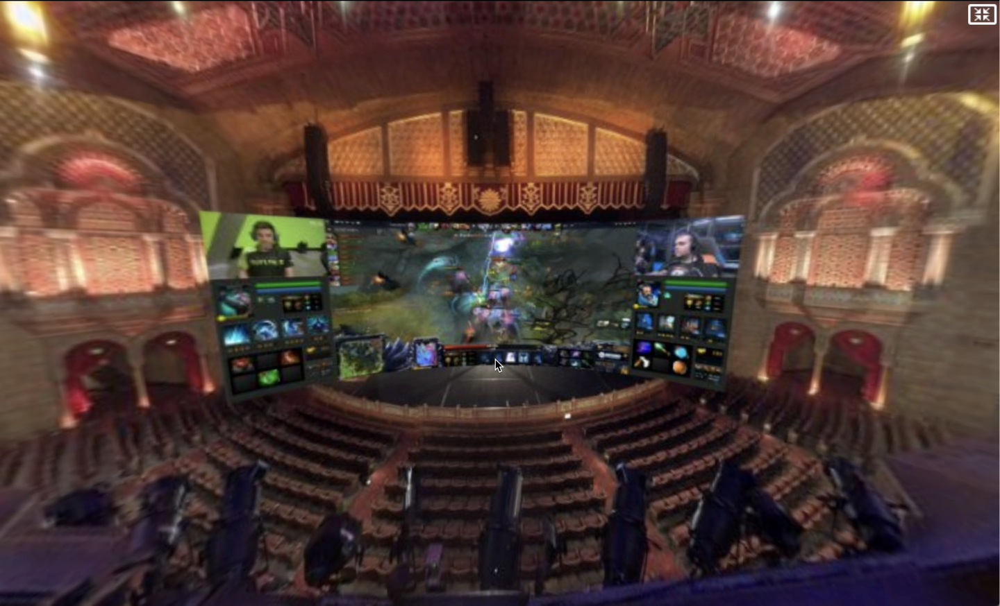
A concept rendering showing how the viewing experience could extend into customizable virtual venues rather than a single fixed theater
Late in the sprint, we ran into major issues transferring the Unity build to the machine connected to the HTC Vive. I ended up rebuilding key parts of the theater and interactions overnight so the team could still present a functioning VR demo. It was a stressful finish, but it also underscored how much of the prototype’s implementation I had personally carried.
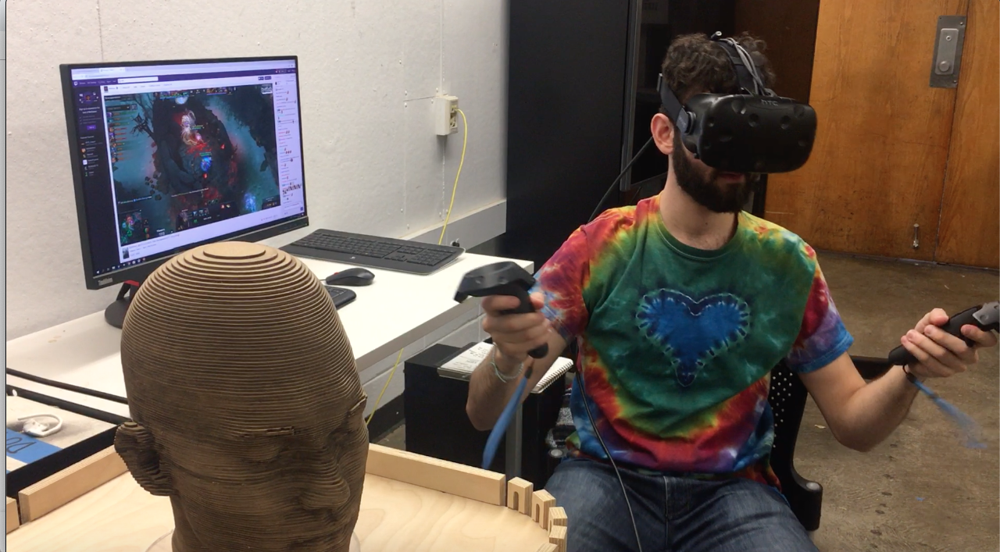
Final headset testing of the Unity prototype before presentation
Selected Screens
These screens show a few of the key ideas in the final prototype: shared viewing with friends, embedded chat and reactions, transitions into more personal viewing modes, and ways of making livestream spectatorship feel more spatial and socially alive in VR.
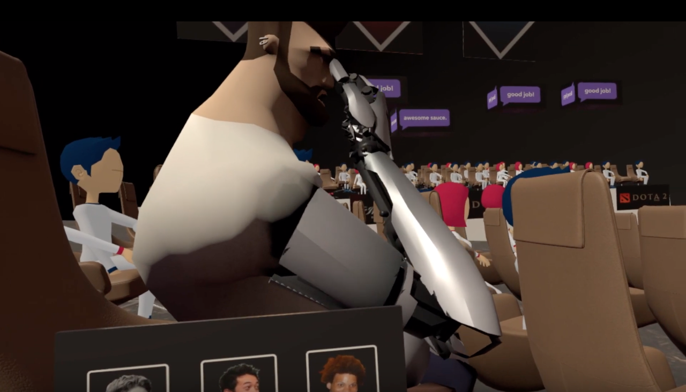
Custom avatars for friends helped reinforce the feeling of co-viewing rather than watching alone in a headset
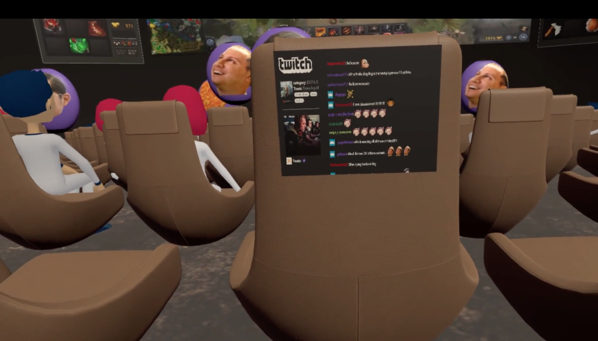
Seatback surfaces provided a place for chat and lightweight interaction without pulling focus away from the stream itself
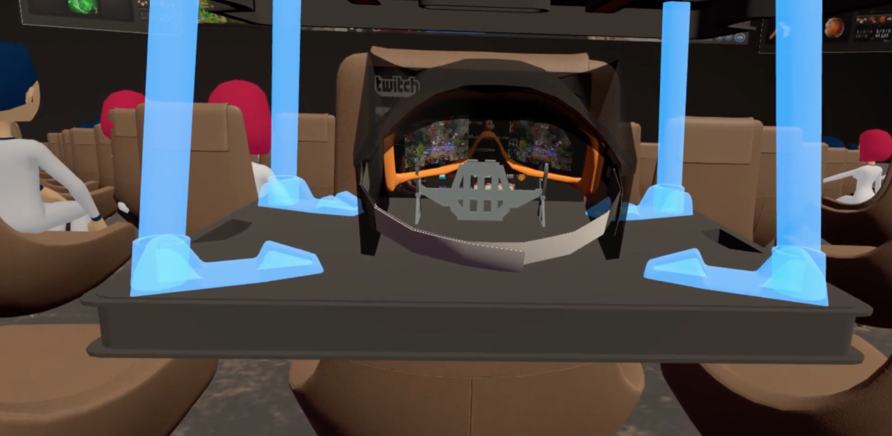
The in-world headset acted as a transition into a more private and immersive viewing mode
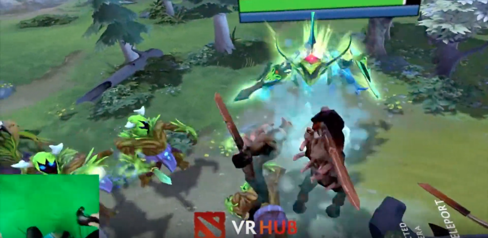
The concept also explored how certain content types, like esports, could benefit from more immersive spectator perspectives in VR
Outcome
TwitchVR was a short sprint, but it was an important project for me because it brought together several things I still care deeply about: immersive interaction design, social product thinking, and the challenge of turning a speculative concept into something concrete enough to experience.
More than anything, the project showed my ability to bridge concept and implementation in VR. I was not just contributing ideas - I was helping shape the interaction model, building the virtual environment, and carrying the prototype into a functioning demo that could be experienced live.